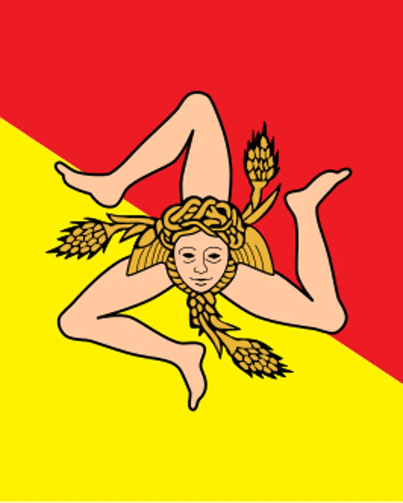
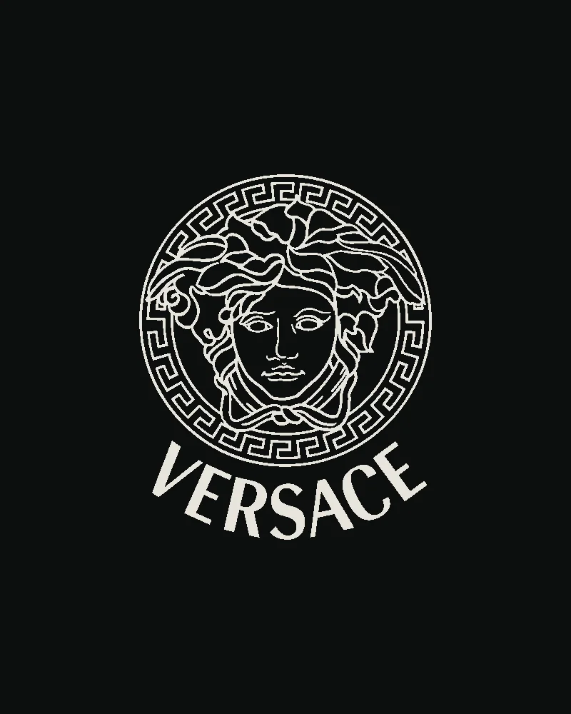
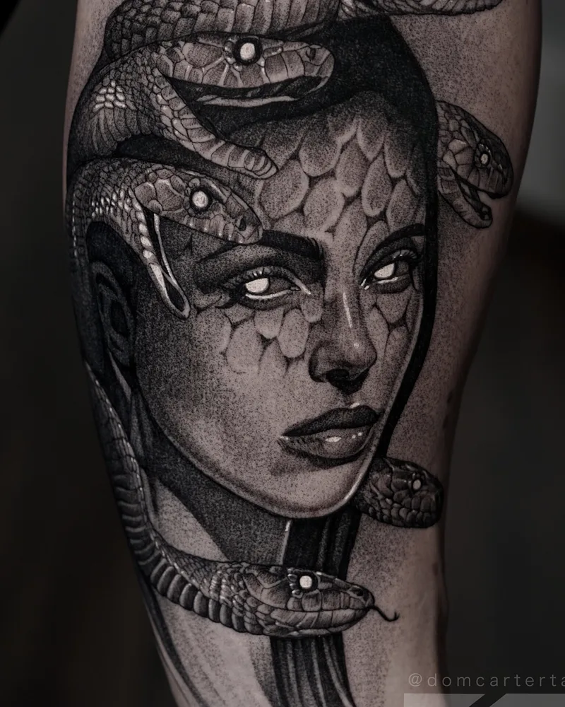
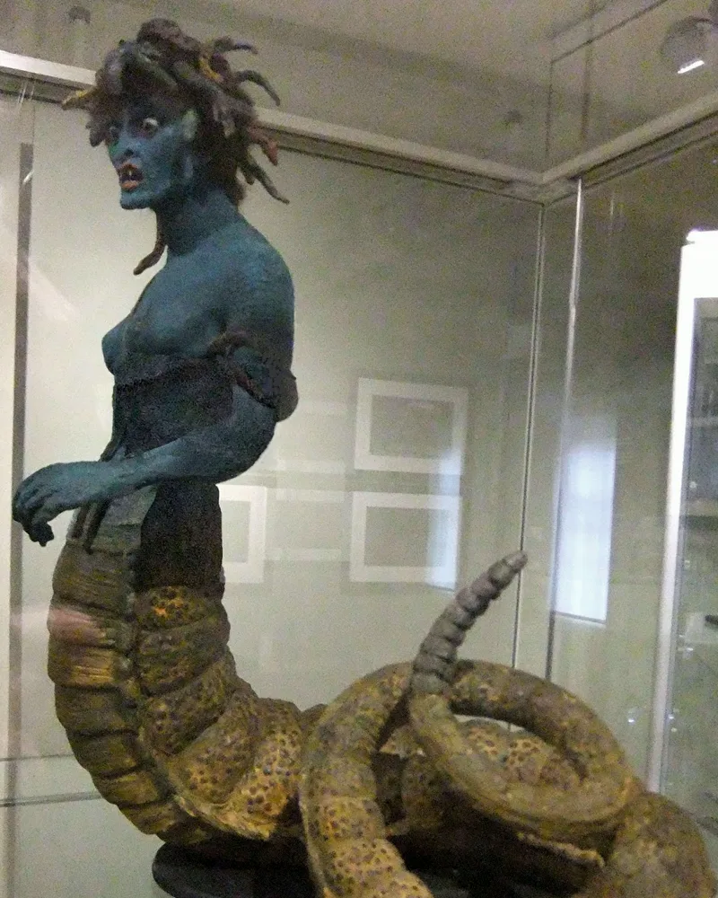
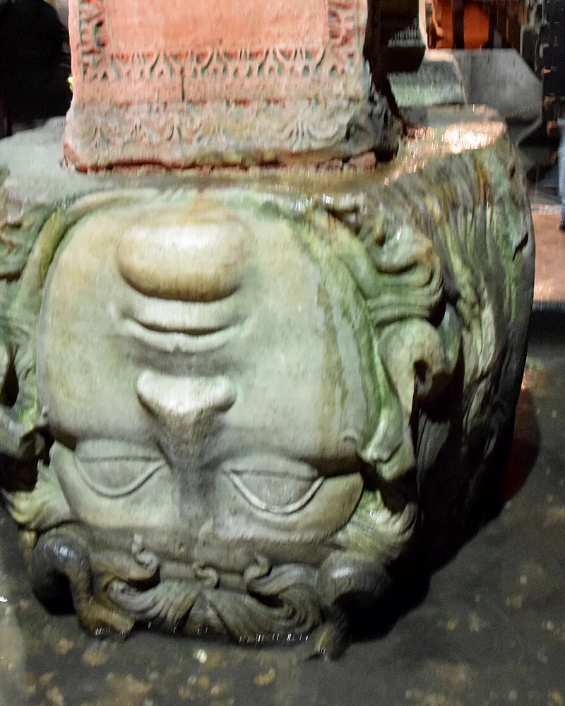

Szene 8 von 9
ΘHeute
Man muss Medusa nur direkt ansehen:
Sie ist nicht tödlich, sie ist schön und sie lacht.
Medusa ist nie verschwunden. Sie hat nur die Orte gewechselt.
Vom Tempelgiebel auf die Flagge einer Insel, vom Schild auf den Unterarm, von der Höhle ins Kino und ins Aquarium: Das Gesicht, das vor zweieinhalbtausend Jahren Feinde abschrecken sollte, begegnet uns heute an Orten, an denen man es nicht erwartet.
Sechs Spuren. Fahre über eine Kachel, damit sie erwacht – auf dem Handy erwachen sie beim Scrollen.
-

01 · Sizilien
Auf der Flagge
Seit dem 4. Januar 2000 ist sie offiziell: die Flagge der Region Sizilien. In der Mitte ein Gorgoneion, um das drei Beine kreisen – die Triskeles – und drei Ähren.1 Das Motiv ist alt: Es steht schon auf Münzen aus Syrakus im 4. Jahrhundert v. Chr.2 Medusa schützt hier eine ganze Insel.
Abb. 42Flagge der Region Sizilien · Wikimedia Commons, gemeinfrei
-

02 · Mode
Ein Schutzzeichen als Marke
Versace wurde 1978 gegründet; das Medusenhaupt steht bei der Marke für Schönheit und Gefahr zugleich.3 Wann das Logo kam, ist umstritten: Manche datieren es auf 1978, andere erst auf 1993 – davor habe es nur ein Schriftlogo gegeben.45 Sicher ist: Wer es trägt, will gesehen werden.
Abb. 43Medusa-Emblem von Versace · Foto: Viceryion, Wikimedia Commons, CC BY-SA 4.0
-

03 · Tattoos und #MeToo
Ein Zeichen des Überlebens
Ende 2021 und noch einmal Mitte 2022 wurde das Medusa-Tattoo auf TikTok zum Trend – als Zeichen dafür, sexuelle Gewalt überlebt zu haben.67 Die Frau, die bei Ovid für ein Verbrechen bestraft wird, das an ihr begangen wurde, wird zum Schutzzeichen für andere Betroffene (siehe Ε Deutungen).
Abb. 44Medusa-Tattoo · Foto: DomCarterTattoo, Wikimedia Commons, CC BY-SA 4.0
-

04 · Film und Spiele
Monster für die Leinwand
In „Kampf der Titanen“ (1981) wurde Medusa zur Stop-Motion-Figur von Ray Harryhausen – es war sein letzter Film; das Remake von 2010 setzte auf Computereffekte.89 In „Assassin’s Creed Odyssey“ ist Medusa ein Mensch, den ein mächtiges Artefakt verwandelt hat.10
Abb. 45Ray Harryhausens Medusa-Modell aus „Kampf der Titanen“ (1981), Valence House Museum · Foto: Dr. Karl Shuker, via ShukerNature (Blog), urheberrechtlich geschützt
-
05 · Biologie
Medusen im Meer
Wenn Biologen von Medusen sprechen, meinen sie Quallen: Bei vielen Nesseltieren ist die Meduse eine von zwei Lebensformen – die frei schwimmende.11 Carl von Linné wählte 1758 den Gattungsnamen Medusa wegen der langen Tentakel, die an Schlangenhaar erinnern.12
Abb. 46Ohrenquallen im Monterey Bay Aquarium (Video, farblich angepasst) · Foto: FASTILY, Wikimedia Commons, CC BY-SA 4.0
-

06 · Istanbul
Kopfüber im Wasser
In der Cisterna Basilica, 532 unter Kaiser Justinian gebaut, tragen zwei Medusenköpfe Säulen – einer liegt auf der Seite, einer steht kopfüber. Wahrscheinlich stammen sie aus älteren römischen Bauten.13 Warum sie gedreht sind, wird unterschiedlich erklärt: gegen den bösen Blick – oder einfach, weil die Größe so passte.
Abb. 47Medusenkopf in der Cisterna Basilica, Istanbul · Foto: Ank Kumar, Wikimedia Commons, CC BY-SA 4.0
Das Gesicht, das abschrecken sollte, ist zum Gesicht geworden, mit dem man sich zeigt.
Auch als Waffe ist sie zurück: Im US-Wahlkampf 2016 zeigten Fanartikel Donald Trump als Cellinis Perseus mit dem Kopf von Hillary Clinton.14 Wie das Muster funktioniert, zeigt das Weiterlesen-Panel in Ε Deutungen.